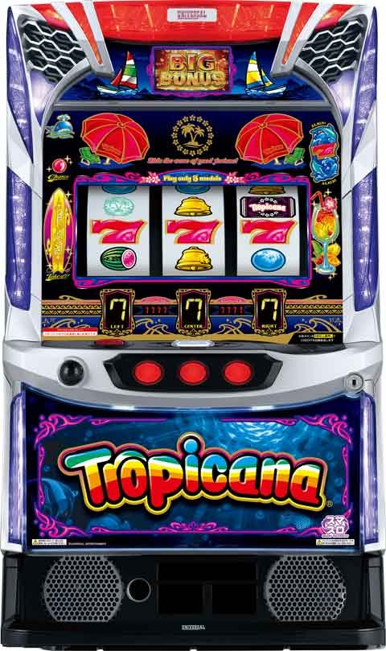

Lトロピカーナ


狙い目
【リセット狙い】
リセット時は1/2でモード7からスタート
モード7は機械割120%？？
0Gからトロピカループ2回突入まで？
リセット狙いは下記の記事で。
【ボーナス間天井狙い】
0スルー 250Gから
その他 300Gから
【天国間天井狙い】
不明
【有利区間切れ狙い】
エンディング後は設定変更後同様強いため、0Gからトロピカループまで？
設定変更後同様ならトロピカループ2回消化まで？
やめ時
77G回してやめ？
エンディング後や設定変更後にトロピカルループ1回なら続行。
その他
出玉率モード

リセット・エンディング後

参考元
基本情報
- メーカー: ミズホ
- 機械割: 93.0% 〜 113.6% ※ 出玉率モードの機械割
- 導入開始日: 2024年08月05日（月）
- ゲーム性概要: 純増約6枚の擬似ボーナスタイプで、『スマスロ トロピカーナ』が登場する。 通常時は毎ゲームの小役でボーナスを抽選していて、パラソルランプが点灯すればボーナス確定。ボーナス中はサーフランプが点灯すればBIGの1G連確定だ。 ボーナス終了後は77G継続の波乗りチャンス（引き戻しゾーン）へ突入。ここでボーナスを引くことができれば「トロピカループ」が発動する。トロピカループ終了後は出玉率モードが自動で切り替わる可能性あり!?


打ち方
打ち方・小役
打ち方（小役狙い）
「最初に狙う絵柄」

左リール上段付近にBARを狙う。
「チェリー停止時」
成立役…弱チェリーor強チェリーor確定チェリー

右リール中段にベル停止で弱チェリー、ベル非停止で強チェリー。中リールにBARが揃えば確定チェリーとなる。 右リールにボーナス絵柄を狙わなかった場合、弱チェリーと強チェリーの判別ができなくなるので注意しておこう（出玉的な損はナシ）。
「BAR下段停止時」
成立役…ハズレorリプレイorベル

「スイカ停止時」
成立役…スイカ

中リールにBARを目安にスイカを狙う。右リールはフリー打ちでOK。
「レア役の停止例」

トロピカルチェリー、トロピカル目はボーナス＋トロピカループ突入確定！
変則押しはNG

通常時は左リール第1停止での消化を推奨する。
ボーナス入賞時

パラソルランプが光ればボーナス確定。告知時に「7を狙えランプ」が点灯した場合は、全リールに7を狙ってボーナスを揃えよう。「7を狙えランプ」が非点灯の場合は擬似遊技でボーナスが揃うため、目押しの必要はない。
確定役
トロピカル目・トロピカルチェリー・中段チェリー
トロピカ11中など、トロピカル目やトロピカルチェリー（いずれも擬似遊技）が出現すれば、ボーナス＋トロピカループ突入確定。 中段チェリーも擬似遊技で、出現した時点でBIG5連以上濃厚だ。

解析情報通常時
小役関連
チェリー成立時の特徴
| 役 | 特徴 |
|---|---|
| 弱or強チェリー | ● 成立後、10G以内にボーナスに当選した場合はBIG濃厚 ● REGだった場合はトロピカループ（1G連5回以上）突入確定 |
| 確定チェリー | ● 成立した時点でトロピカループ突入確定 |
モード
遅れモード性能
| 項目 | 示唆 |
|---|---|
| 移行契機 | 通常時・前兆中の一部 （トロピカループ非突入のボーナスが続くほど突入しやすい） |
| 恩恵 | 滞在中にスイカを引くほど、 トロピカループ突入時の1G連回数が多くなりやすい |
| 終了契機 | トロピカループ突入 |
遅れ＋ハズレは遅れモード濃厚となる。
告知状態（ボーナス抽選）
告知状態
前兆（フェイク前兆・トロピカ11・ボーナス本前兆）に非当選のリプレイ・スイカ・弱or強チェリー成立時に、「告知状態」への移行を抽選していて、 「告知状態」中にリプレイが成立すればボーナス当選 。ショート・ミドル・ロングの3種類によって保証ゲーム数の長さが異なり、滞在中に再び当選した場合は保証ゲーム数が上乗せされる。
波乗りチャンス中も同様の抽選がおこなわれていて、77Gを消化し終えた時点で「告知状態」のゲーム数が残っていた場合はボーナス濃厚＝トロピカループへ突入する。
チェリー・告知状態移行率
| 役 | 移行率 |
|---|---|
| 弱チェリー | 約50% |
| 強チェリー | 濃厚 |
※前兆非当選時のみ抽選
フェイク前兆への移行割合はかなり低いため、基本的には弱チェリー成立時の約50%で告知状態へ移行、強チェリーは告知状態移行濃厚と考えてOKだ。
告知状態のゲーム数＆ボーナス期待度
| 告知状態 | ゲーム数 | 期待度 |
|---|---|---|
| ショート | 3G＋α | 33.9% |
| ミドル | 10G＋α | 75.5% |
| ロング | 255G | 濃厚 |
※ショート・ミドルの期待度は滞在中の保証ゲーム数上乗せも含んだ数値
出玉率モード
出玉率モード概要
本機には設定が存在せず、0〜7の8段階の出玉率モードによって初当り確率などが変化。初回のモードは設定変更時に決まり、以降はトロピカループ終了時の一部やエンディング終了時にモード移行抽選がおこなわれる。 設定変更時とエンディング後は1/2でモード7が選ばれるため、早い初当り＆連チャンに期待できるぞ。
出玉率モードの抽選契機・特徴
| 項目 | 内容 |
|---|---|
| 抽選契機 | 設定変更時、 トロピカループ終了時の一部、 エンディング終了時 |
| ボーナス初当り確率 | 偶数モードが優遇 |
| トロピカループ突入率 | 高モードほど優遇 |
| トロピカループ中の1G連回数 | 奇数モードが優遇 |
| その他特徴 | 低モードは滞在比率が低く、 高モードは滞在比率が高い |
出玉率モードごとの期待度
| モード | ボーナス 初当り確率 | トロピカループ 突入率 | トロピカループの 1G連回数 |
|---|---|---|---|
| 0 | 中 | 低 | 低 |
| 1 | 低 | 低 | 中 |
| 2 | 中 | 低 | 低 |
| 3 | 低 | 低 | 中 |
| 4 | 中 | 中 | 低 |
| 5 | 低 | 中 | 中 |
| 6 | 中 | 高 | 低 |
| 7 | 低 | 高 | 中 |
［設定変更時・エンディング終了時］ 出玉率モード振り分け
| モード | 振り分け |
|---|---|
| 0 | 12.5% |
| 1 | 20.3% |
| 2 | 0.8% |
| 3 | 0.8% |
| 4 | 2.3% |
| 5 | 3.1% |
| 6 | 10.2% |
| 7 | 50.0% |
設定変更時、エンディング終了時は約66%でモード4以上を選択（機械割100%以上）する。
トロピカループ突入率
モードとボーナス回数によってトロピカループ突入期待度が変化し、最大10回目のボーナス当選でトロピカループ突入確定。モードによって突入率は異なるが、全モード共通で奇数回目のボーナスは期待度が高い。
ボーナス回数別・トロピカループ突入期待度
| ボーナス | モード0 | モード1 | モード2 | モード3 |
|---|---|---|---|---|
| 1回目 | ◯ | ◯ | ◯ | ◯ |
| 2回目 | ▲ | ▲ | ▲ | ▲ |
| 3回目 | ◯ | ◯ | ◯ | ◯ |
| 4回目 | ▲ | ▲ | ▲ | ▲ |
| 5回目 | ◯ | ◯ | ◯ | ◯ |
| 6回目 | ▲ | ▲ | ▲ | ▲ |
| 7回目 | ◯ | ◯ | ◯ | ◯ |
| 8回目 | ▲ | ▲ | ▲ | ▲ |
| 9回目 | ▲ | ▲ | ▲ | ▲ |
| 10回目 | 確定（天井） | |||
| ボーナス | モード4 | モード5 | モード6 | モード7 |
| 1回目 | ◎ | ◎ | ◎ | ◎ |
| 2回目 | ▲ | ▲ | ▲ | ▲ |
| 3回目 | ◯ | ◯ | ◯ | ◯ |
| 4回目 | ▲ | ▲ | ▲ | ▲ |
| 5回目 | ◯ | ◯ | ◯ | ◯ |
| 6回目 | ▲ | ▲ | ▲ | ▲ |
| 7回目 | ◯ | ◯ | ◯ | ◯ |
| 8回目 | ▲ | ▲ | ▲ | ▲ |
| 9回目 | ▲ | ▲ | ▲ | ▲ |
| 10回目 | 確定（天井） |
※期待度…▲＜◯＜◎
滞在比率の特徴
| モード | 特徴 |
|---|---|
| モード0・1 | 45%以上が2000G未満の滞在 |
| モード2以上 | 1000G未満の比率が1.5%以下 |
| モード6・7 | 50%以上が3000G以上滞在 |
出玉率モードの滞在ゲーム数比率
| ゲーム数 | モード0 | モード1 | モード2 | モード3 |
|---|---|---|---|---|
| 1000G未満 | 15.3% | 14.8% | 1.4% | 1.5% |
| 1000～1999G | 31.5% | 31.0% | 30.1% | 27.0% |
| 2000～2999G | 28.5% | 28.7% | 34,5% | 33.1% |
| 3000～3999G | 16.3% | 16.5% | 21.0% | 22.6% |
| 4000G以上 | 8.3% | 8.9% | 12.9% | 15.9% |
| ゲーム数 | モード4 | モード5 | モード6 | モード7 |
| 1000G未満 | 1.2% | 1.2% | 0.8% | 1.0% |
| 1000～1999G | 25.2% | 22.0% | 18.3% | 18.4% |
| 2000～2999G | 30.2% | 29.2% | 26.5% | 24.4% |
| 3000～3999G | 20.6% | 22.5% | 23.6% | 19.7% |
| 4000G以上 | 22.7% | 25.1% | 30.8% | 36.5% |
低モードほど滞在比率が低く、高モードほど滞在比率が高いのが特徴だ。
演出動画
ロングフリーズ
フリーズ発生でBIG5連以上が確定。発生タイミングはレバーON時とリール回転開始後の2個所あるが、恩恵はどちらも共通となっている。
フリーズ
ロングフリーズ

フリーズは2パターンあり、どちらが発生してもBIG5連以上濃厚となる。
フリーズのパターン
| パターン | 特徴 |
|---|---|
| 1 | リールが始動せずにフリーズ後、7を狙えが発生 |
| 2 | リール始動後にフリーズ後、擬似遊技で7が揃う |
解析情報ボーナス時
ボーナス（BIG、REG）
ボーナス概要

ボーナスはBIGとREGの2種類で、どちらも消化中はBIGの1G連を抽選。ボーナス開始時や消化中にリール左のサーフランプが点灯すればBIG1G連かつ、トロピカループ突入も確定する。 サーフランプ非点灯のボーナス終了時および、トロピカループ終了後は77Gの波乗りチャンスへ移行。波乗りチャンス中にボーナスを引けば再びトロピカループへ突入する。
ボーナス性能
| 項目 | BIG | REG |
|---|---|---|
| 1Gあたりの純増 | 約6枚 | |
| 獲得枚数 | 約204枚 | 約105枚 |
| 消化中の抽選 | BIG1G連 | |
| 終了後 | 波乗りチャンスへ （トロピカループ非突入時） |
基本的にはBIGからトロピカループが始まるが、REGを契機にトロピカループが始まった場合はBIGの1G連5回以上が確定する。
「サーフランプ」

ボーナス開始時や消化中に点灯でBIG1G連＋トロピカループ突入（継続）確定。
「カクテルランプ」

ボーナス中の小役でBIG1G連を獲得した場合、カクテルランプが点灯する。
トロピカるゾーン

トロピカループ中のBIG消化中は、残り枚数が50枚になるとトロピカるゾーンへ移行。トロピカループの継続を告知するゾーンで、終了までにサーフランプが点灯すればトロピカループ継続確定だ。
トロピカループ突入までのボーナス回数の分布
| ボーナス回数 | 分布 |
|---|---|
| 1回目 | 23.1% |
| 2回目 | 20.8% |
| 3回目 | 22.9% |
| 4回目 | 6.9% |
| 5回目 | 13.2% |
| 6回目 | 3.4% |
| 7回目 | 6.1% |
| 8回目 | 0.7% |
| 9回目 | 0.7% |
| 10回目 | 2.1% |
※波乗りチャンス中のボーナス当選なども含んだ、ボーナス回数ごとのトロピカループ突入期待度
約70%がボーナス3回目まで、約90%が5回目までにトロピカループへ突入する。
波乗りチャンス
波乗りチャンス概要

初当りボーナスでサーフランプ非点灯後、トロピカループ非継続となったボーナス終了後に突入する77Gの引き戻しゾーン。ここでボーナスを引けばトロピカループ突入が確定する。
波乗りチャンス性能
| 項目 | 内容 |
|---|---|
| 突入契機 | トロピカループ非当選のボーナス終了後、 トロピカループ終了後 |
| 滞在ゲーム数 | 77G |
| 消化中の抽選 | ボーナス当選でBIG1G連＋トロピカループ確定 |
トロピカループ
トロピカループ概要
BIGの1G連がループする状態。おもに初当りボーナス当選時に突入を抽選していて、継続する限りBIGの1G連がループし続ける。リール左のサーフランプが点灯することでトロピカループ突入を告知。波乗りチャンス中のボーナス当選時はBIG1G連＋トロピカループ突入が確定する。
トロピカループ性能
| 項目 | 内容 |
|---|---|
| 突入契機 | ボーナス初当り時の一部、 波乗りチャンス中のボーナス当選時 |
| 恩恵 | ループが続く限りBIG1G連が継続 |
演出情報
通常時
通常時の注目ポイント
| 項目 | 内容 |
|---|---|
| レバーON時の予告音 | レア役示唆 |
| 泡予告 | リプレイorスイカ示唆、矛盾でチャンス |
| 泡予告 | 小役入賞後に泡予告頻発でボーナス確率アップ中!? |
| 遅れ（※） | 大チャンス ボーナス当選でトロピカループ突入に期待!? |
| スイカ入賞時 | チャンスボタンを押すと液晶が変化 鳥が表示されると次回ボーナス後がチャンス |
| ベル入賞時 | リールフラッシュがいつもと違えばチャンス 時計回りフラッシュなら大チャンス |
| ボーナス当選回数 | トロピカループ非突入のボーナス回数に注目 奇数回目のボーナスは期待度アップ |
| くじらランプ | 点滅でトロピカループのチャンス 点灯は激アツ |
※遅れ発生後すぐにボーナスに当選しなくても、トロピカループに期待できる
［スイカ入賞時PUSH：鳥表示］

［くじらランプ］

パラソルランプ点灯パターン

通常時はパラソルランプ点灯でボーナス確定。点灯パターンは全部で19種類あり、通常点滅以外なら何かしらの恩恵ありが濃厚となる。
パラソルランプの点灯パターン・示唆内容
| パターン | 通常時 （特定条件以外） | BIG1G連時 | 特定条件下 （※1） |
|---|---|---|---|
| 通常点滅 | デフォルト | ||
| 高速点滅 | トロピカループ ＋BIGストック 1個以上 | BIGストック 1個以上 | トロピカループ ＋BIGストック 5個以上 |
| ぼんやり点滅 | トロピカループ ＋BIGストック 1個以上 | BIGストック 1個以上 | トロピカループ ＋BIGストック 5個以上 |
| 通常点滅から シャンシャシャシャン | トロピカループ ＋BIGストック 1個以上 | BIGストック 1個以上 | トロピカループ ＋BIGストック 5個以上 |
| チラ点灯→点滅 | トロピカループ ＋BIGストック 1個以上 | BIGストック 1個以上 | トロピカループ ＋BIGストック 5個以上 |
| 337拍子 | トロピカループ ＋BIGストック 1個以上 | BIGストック 1個以上 | トロピカループ ＋BIGストック 5個以上 |
| 右からウェーブ | トロピカループ ＋BIGストック 1個以上 | BIGストック 1個以上 | トロピカループ ＋BIGストック 5個以上 |
| 左右同時点灯 | トロピカループ ＋BIGストック 1個以上 | BIGストック 1個以上 | トロピカループ ＋BIGストック 5個以上 |
| うずまき | トロピカループ ＋BIGストック 1個以上 | BIGストック 1個以上 | トロピカループ ＋BIGストック 5個以上 |
| スロー点滅 | トロピカループ ＋BIGストック 1個以上 | BIGストック 1個以上 | トロピカループ ＋BIGストック 5個以上 |
| 椅子だけ点灯 | トロピカループ ＋BIGストック 5個以上 | BIGストック 2個以上 （※2） | REG当選＋ トロピカループ ＋BIGストック 5個以上 |
| 左のみ点滅 | トロピカループ ＋BIGストック 5個以上 | BIGストック 2個以上 （※2） | REG当選＋ トロピカループ ＋BIGストック 5個以上 |
| ルーレット（結果左） | トロピカループ ＋BIGストック 5個以上 | BIGストック 2個以上 （※2） | REG当選＋ トロピカループ ＋BIGストック 5個以上 |
| 傘と椅子交互点滅 | トロピカループ ＋BIGストック 5個以上 | BIGストック 2個以上 （※2） | REG当選＋ トロピカループ ＋BIGストック 5個以上 |
| 右のみ点滅 | トロピカループ ＋BIGストック 5個以上 （※2） | BIGストック 4個以上 （※2） | トロピカループ ＋BIGストック 5個以上 （※2） |
| ルーレット（結果右） | トロピカループ ＋BIGストック 5個以上 （※2） | BIGストック 4個以上 （※2） | トロピカループ ＋BIGストック 5個以上 （※2） |
| ランダム点滅 | トロピカループ ＋BIGストック 5個以上 （※2） | BIGストック 4個以上 （※2） | トロピカループ ＋BIGストック 5個以上 （※2） |
| レインボー点灯 | トロピカループ ＋BIGストック 5個以上 （※2） | BIGストック 4個以上 （※2） | トロピカループ ＋BIGストック 5個以上 （※2） |
| 遅れレインボー点灯 | トロピカループ ＋BIGストック 5個以上 （※2） | BIGストック 4個以上 （※2） | トロピカループ ＋BIGストック 5個以上 （※2） |
※1…トロピカ11経由、波乗りチャンス中、トロピカル目、トロピカルチェリー契機のボーナス ※2…ストック数が多いほど発生しやすい
ボーナス当選でトロピカループ突入が確定するパターン
| No. | パターン |
|---|---|
| 1 | トロピカ11契機 |
| 2 | 波乗りチャンス中 |
| 3 | トロピカル目orトロピカルチェリー出現（いずれも擬似遊技） |
| 4 | 確定チェリー成立 |
上記4パターンでのボーナス当選時はトロピカループ突入が確定する。
ボーナススルー回数示唆
ベル揃い時のリールフラッシュは、デフォルト以外が発生すればボーナススルー回数を示唆。 くじらランプは演出ナシ＋リプレイ成立の第3停止後に点滅 or 点灯が発生する可能性があり、点滅＜点灯の順にチャンス。ボーナス間でどちらか1回しか発生しない。
ベル揃い時のリールフラッシュでの ボーナススルー回数示唆
| フラッシュ | 示唆 |
|---|---|
| 下から上へ | デフォルト |
| 上から下へ | 天井到達が近いほど発生しやすい |
| 右から左 | 残り3回以下濃厚 |
| 時計回り | 残り2回以下濃厚 |
くじらランプでのボーナススルー回数示唆
| パターン | 示唆 |
|---|---|
| 点滅 | 残り3回以下濃厚 |
| 点灯 | 次のボーナスでトロピカループ突入 |
［ベル揃い時のフラッシュ］

［くじらランプ］

くじらランプによる示唆はボーナス間で1回しか発生しない。
トロピカループ突入時の1G連回数示唆
スイカ揃い時にCHANCEボタンを押すと、変化する液晶の内容でトロピカループに突入した際のBIG1G連回数を示唆する（スイカを取りこぼした場合、示唆は出現しない）。
スイカ揃い時にCHANCEボタンを押したときの 液晶による示唆
| 液晶 | 示唆 |
|---|---|
| 飛行機 | デフォルト |
| カモメ | 1G連回数：中 |
| 鷲 | 1G連回数：多 |
［飛行機］

［カモメ］

［鷲］

ボーナススルー回数とは関係ないので、例えば鷲が出現したからといって、トロピカループが近いことを示唆するわけではない。
サウンド系の演出・示唆内容
| 演出 | 示唆 | |
|---|---|---|
| 遅れ （※） | チェリー | ● 本前兆確定 |
| 遅れ （※） | リプレイ・スイカ | ● 告知状態ロングor遅れモード滞在 |
| 遅れ （※） | ハズレ | ● 遅れモード滞在 |
| 予告音 | ハズレ | ● 告知状態ロングorトロピカ11 |
| 違和感予告音 | ● トロピカ11or本前兆に期待 | |
| 泡音予告 | レバーON時 | ● リプレイorスイカ対応、矛盾で告知状態orトロピカ11 |
| 泡音予告 | 第1停止時のみ | ● リプレイ以外の全役対応、告知状態中は発生頻度がアップ ● リプレイ成立時は告知状態orトロピカ11 |
| 泡音予告 | 第3停止時のみ | ● リプレイ以外の全役対応、告知状態中は発生頻度がアップ（第1停止時のみよりチャンス） ● リプレイ成立時は告知状態orトロピカ11 |
| 泡音予告 | チェリー成立 | ● 告知状態orトロピカ11 |
| 予告音＋ 泡音予告 | ハズレ （押し順ベル） | ● 告知状態濃厚 |
| 予告音＋ 泡音予告 | リプレイ | ● 告知状態ロングorトロピカ11 |
| 予告音＋ 泡音予告 | スイカ | ● 告知状態に期待 |
※遅れは確定チェリーやトロピカル目出現時にも発生の可能性あり。トロピカ11中は法則の対象外
［泡予告音］

弱と強の2パターンあり、弱は筐体LEDが白く点灯。強は水色に点灯する。
前兆
トロピカ11

チェリーを契機に突入する期待度約50%の前兆ゾーン。11G以内に告知発生でボーナス確定だ。
トロピカ11の演出法則
| 項目 | 法則 |
|---|---|
| 基本法則 | ● ボーナス当選時の50%以上がカウント5以下で告知される ● カウントが7になるゲームは告知される可能性が高い（リーチ目出現含む） ● ボーナス当選時の約10%は最終ゲームのPUSH経由もしくは、復活で告知（リーチ目出現） ● 開始時にビーチボールランプが瞬くとボーナス濃厚 ● カウント7から始まるトロピカ7は成功濃厚のプレミアムパターン |
違和感演出
| 項目 | 法則 |
|---|---|
| 発生タイミング | ● 最終ゲーム以外で発生の可能性あり |
| ボーナス告知 | ● 当該ゲームでリーチ目が出現or次ゲームに告知発生 |
| 違和感パターン | ● 停止音が無音 ● 第3停止音が遅れる ● LED全消灯＆第3停止後にビーチボールランプが点灯 ● 特殊ボイス「受け取って…くれるよね？」 ● ビーチボールランプが瞬き点滅 ● 第3停止後にパラソルランプが瞬き点滅 ● 下パネルが瞬き点滅 ● リール下セグに「7777」表示 ● デカセグのカウントダウンが第3停止時に減算される（レバーON時がデフォルト） ● リプレイ成立時にリールフラッシュが発生しない |
最終ゲームの法則
| 項目 | 法則 |
|---|---|
| 基本パターン | ● フェイク前兆時は第3 停止後にセグのカウントが消え、次ゲームから通常時へ ● PUSH出現時→ボタンPUSHで演出が成功すれば次ゲームでパラソルランプが点灯（ボーナス） |
| 法則 | ● レバーON時or第1停止時にあおりが発生すると、第3停止後にPUSHボタンが出現 ● PUSHボタンを押して何も起こらない場合、ボーナス濃厚（PUSH3回目で成功演出発生） |
PUSHボタンを押した時の特殊ボイス（ボーナス濃厚）
| No. | ボイス |
|---|---|
| 1 | 「プーッシュ！」 |
| 2 | 「何か光ってる…！ 押しちゃおうかな～」 |
| 3 | 「お、押してくれてもいいんですからね！」 |
［ビーチボールランプ］

ボーナス（BIG、REG）
ボーナス終了時のヨットランプ

ボーナス終了時にチャンスボタンを押すと、液晶左右のヨットランプの点灯パターンで出玉率モードを示唆する。チャンスボタンが点灯したりといった合図はないので、ボーナス終了時はボタンPUSHを忘れないように！
点灯の系統ごとの大まかな示唆
| 系統 | 示唆 |
|---|---|
| 片方点灯 | 奇数or偶数モード濃厚 |
| 片方点滅 | 特定モード否定 |
| 交互点滅 | 特定モード以上濃厚 |
| 両方点灯（＋ボイス） | 高モード濃厚 |
| 同時＆高速点滅 | 次回のモード変更時はモード7のチャンス |
ヨットランプの点灯パターン・示唆内容
| 系統 | パターン | 示唆 |
|---|---|---|
| 片方点灯 | 左点灯 | 奇数モード濃厚 |
| 片方点灯 | 右点灯 | 偶数モードorモード7濃厚 |
| 片方点滅 | 左もわもわ点滅 | モード0否定 |
| 片方点滅 | 右もわもわ点滅 | モード1否定 |
| 片方点滅 | 左点滅 | モード2否定 |
| 片方点滅 | 右点滅 | モード3否定 |
| 交互点滅 | 左から交互点滅 | モード2以上濃厚 |
| 交互点滅 | 右から交互点滅 | モード3以上濃厚 |
| 交互点滅 | 左2回・右2回 交互点滅 | モード変更示唆（※1） |
| 両方点灯 （＋ボイス） | 両方点灯のみ | モード4以上濃厚 |
| 両方点灯 （＋ボイス） | 「これがウワサの…!?」 （※2） | モード4or6or7濃厚 |
| 両方点灯 （＋ボイス） | 「私たちの、ナイショの楽園」 （※2） | モード5以上濃厚 |
| 両方点灯 （＋ボイス） | 「ここでしか味わえない景色、 ご堪能あれ！」（※2） | モード7濃厚 |
※1…前回の波乗りチャンス終了後にモードが変更されたことを示唆 ※2…両方点灯＋ボイス発生
ボーナステンパイボイス

ボーナス絵柄テンパイ時にボイスが発生すればBIG1G連のストックありを示唆。ボイスの種類でストック数の期待度が異なる。
ボーナステンパイボイス・示唆内容
| ボイス | 通常時 （特定条件以外） | BIG1G連時 | 特定条件下 （※1） |
|---|---|---|---|
| ナシ | デフォルト | ||
| 「カラフルエブリデイ」 | トロピカループ ＋BIGストック 1個以上 | BIGストック 1個以上 | トロピカループ ＋BIGストック 5個以上 |
| 「今日もスペシャル！」 | トロピカループ ＋BIGストック 5個以上 | BIGストック 2個以上 （※2） | REG当選＋ トロピカループ ＋BIGストック 5個以上 |
| 「奇跡の瞬間に、 トロピカーナ」 | トロピカループ ＋BIGストック 5個以上 （※2） | BIGストック 4個以上 （※2） | トロピカループ ＋BIGストック 5個以上 （※2） |
※1…トロピカ11経由、波乗りチャンス中、トロピカル目、トロピカルチェリー契機のボーナス ※2…ストック数が多いほど発生しやすい
擬似遊技時のボーナス入賞ライン
擬似遊技でBIGが揃う際、中段以外に揃えば複数のBIG1G連ストックありが濃厚となる。擬似遊技でREGが揃った場合は1G連ストック5個以上濃厚だが、上段に揃えば6個以上のストックに期待できる。
擬似遊技のボーナスが揃うラインでの BIG1G連ストック数示唆
| ライン | BIG | REG |
|---|---|---|
| 中段 | デフォルト | 5個以上 |
| 右上がり | ストック2個以上 | 5個以上 |
| 上段 | ストック2個以上 | 5個以上かつ6個以上に期待 |
ボーナス終了画面
ボーナス終了画面で出玉率モードを示唆。BIG終了時よりもREG終了時の方が示唆画面が出現しやすい。 歌付きのBIG終了時、1G連のBIG終了時はモード示唆画面は出現せず、専用の画面が表示される。
ボーナス終了画面・示唆内容
| 画面 | 示唆 |
|---|---|
| 夕方 | デフォルト |
| 夕方＋イルカ | モード2以上のチャンス |
| 夜 | モード4以上のチャンス |
［夕方］

［夕方＋イルカ］

［夜］

ボーナス中の楽曲変化・示唆内容
| ボーナス | 楽曲 | 示唆 |
|---|---|---|
| BIG | GO One’s Own Way | トロピカループ確定 |
| BIG | トロピカってGO1GO！ | カクテルランプ点灯or 7を狙え成功後に変化 |
| BIG | パラダイスPreparing | 次回の1G連も確定 |
| BIG | Blue In Blue | フリーズ発生時専用 |
| BIG | Blessing | エンディングボーナスで発生 |
| REG | 夏恋シークレット | トロピカループ確定 （1G連5回以上） |
［楽曲名は液晶で確認可能］

ボーナス中の演出法則
| 項目 | 法則 |
|---|---|
| 停止音変化 | ● リール回転開始時に予告音が発生し、その後の停止音変化でカクテルランプ点灯（1G連）を示唆。予告音発生時は最低でも第1停止までは停止音が変化 |
| カクテルランプ 点灯確定パターン | ● レバーON時に予告音発生→第1停止で予告音非発生 ● ベル成立時に停止音変化が発生 |
| カクテルランプ 点灯確定の レバーON時違和感 （サーフランプ点灯にも期待） | ● レバーON時にビーチボールランプ点灯 ● レバーON時にカクテルランプが瞬き点滅 ● レバーON時にリール下のセグに「7777」表示 ● リール回転開始時にボイスが発生 |
リール回転開始時に発生する可能性のあるボイス
| No. | ボイス |
|---|---|
| 1 | 「あっつーい、喉乾いた！」 |
| 2 | 「怪しいな～」 |
| 3 | 「ステアではなくシェイクで、ね？」 |
トロピカるゾーンの演出法則
| 項目 | 法則 |
|---|---|
| 基本法則 | ● REG中、歌付き楽曲発生のBIG中、ボーナス中にカクテルランプ点灯後は移行しない ● 1G連で当選したBIG中は基本的に発生 ● 1G連以外のBIGで発生した場合はトロピカループ突入確定 ● リプレイorレア役の次ゲームは告知発生率がアップ（フラッシュがいつもと違えば大チャンス） |
違和感演出
| 項目 | 法則 |
|---|---|
| 発生時の恩恵 | ● BIG1G連確定 |
| 違和感パターン | ● 液晶のタイトルがとろぴかるぞーん（ひらがな表記） ● リール回転開始音が無音 ● 第1or第2停止の停止音が発生しない ● BGMストップ（レバーON～第2停止までで発生） ● 第3停止後にビーチボールランプが瞬き点滅（残り1G連回数期待度：中） ● リール回転開始時にビーチボールランプが点灯（残り1G連回数期待度：中） ● レバーON時に液晶がブラックアウト（残り1G連回数期待度：大） |
波乗りチャンス
筐体枠LED色

波乗りチャンス中は筐体枠LEDの色が青＜緑＜紫のいずれかに点灯。色によって引き戻し期待度が変化する。
波乗りチャンス中の筐体枠LEDの色
| 項目 | 内容 |
|---|---|
| 期待度 | 青＜緑＜紫 |
| 法則 | 61G目に青＋オレンジに変化すれば 78G目（波乗りチャンス終了後1G目）で ボーナス当選のチャンス |